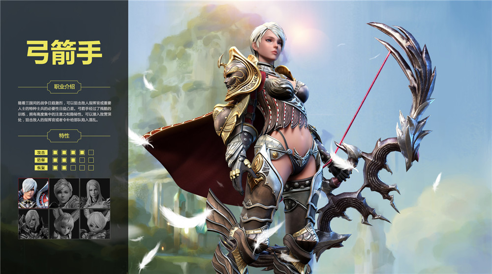

世纪天成公布代理AZERA 中文定名《魔甲时代》
发布日期：2015年05月29日
世纪天成今日正式宣布代理由韩国TimberGames研发的大型机甲国战网游《AZERA》，中文定名《魔甲时代》，同时官方预告站>>> //azera.tiancity.com 也已同步上线。
《魔甲时代》以幻想世界与科学文明共存的独特世界为背景，故事由大灾难后幸存下来的亚托，贝尔卡，塞利昂三个国家为了争夺拥有强大力量的资源“水晶”而爆发战争展开。
游戏强调大规模的战争，并加入了独具特色的“魔甲机”系统。魔甲机是利用“水晶”唤醒魔法心脏后使用的大型魔法兵器，作为一款国战类游戏，海量魔甲机的登场，必将带来一场精彩燃情的次世代国战。同时，为了让玩家真实体验整个国家的运营情况，《魔甲时代》创新地导入了“选举系统”“国王阁僚体质”等全新国战玩法。
亚托
亚托的国土面积最大，但土地也是最为贫瘠。亚托人拥有坚忍不拔的武士气质，他们在北方不断开疆拓土，在怪物的鲜血中建立了自己的国家。贝尔卡
内尔卡拥有肥沃的土地。因此孕育出了灿烂的文明。那里的人们崇拜正义和理性，拥有从不认输的必胜信念。
塞利昂
东部的塞利昂虽然面积最小，但凭借强大的凝聚力和不被任何事物束缚的自由的想象力，拥有足以和两大强国匹敌的实力。
《魔甲时代》目前公布的六个职业为战士、魔法师、猎魔师、弓箭手、刺客和咒术士。除了传统职业设定外，游戏还将带来提升角色专属能力值的“基因组”系统、赋予专用技能的“祭灵武器”等特色系统
战士
在士官学校中受过正式教育的战斗指挥官。为了成为所有战士们的榜样，总是在最前方负责突破和保护队友，将战争带向胜利。总是第一个冲锋，最后一个撤退的战士赢得了同伴们的绝对信任。
魔法师
在人类和精灵的关系还不错的时候，有几个人类流浪者和精灵坠入了爱情，并留下了子孙。他们大部分拥有高超的魔法才能，还会使用魔甲机，因此成为了战争的主力。
猎魔师
发掘阿泽拉的遗物，对其进行研究，并应用于战斗的专家。为了发掘和研究遗物，必须拥有过人的学识。此外，为了去怪物出没的地下城探险，躲避古代人设置的陷阱，还必须拥有强健的体魄。
弓箭手
随着三国间的战争日趋激烈，可以狙击敌人指挥官或重要人士的特种士兵的必要性日益凸显。弓箭手经过了残酷的训练，拥有高度集中的注意力和隐秘性。可以潜入敌营深处，狙击敌人的指挥官或者令补给部队陷入混乱。

暗杀者
为了执行暗杀任务而制造的生化战斗兵器-------“猎杀者”的后裔。由人类的基因和动物的基因混合制造而成，属于奇美拉的一种。原本性格非常凶暴，体型很大。但是经过时代的变迁，性格已经不像以前那样凶暴，体型也逐渐小型化。
咒术士
为了和大自然沟通而用人类和动物的基因混合制造而成的生化战斗兵器----“猎杀者”的后裔。经过时代的变迁，拥有了可以和其他世界的精灵或灵魂沟通的力量。
《魔甲时代》，带你体验真正的“战争”！有关《魔甲时代》测试时间等进一步消息，敬请关注《魔甲时代》官方网站>>>//azera.tiancity.com。
世纪天成
2015年5月29日